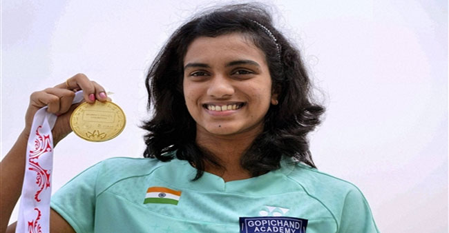
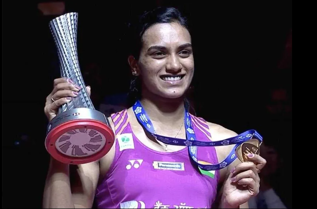
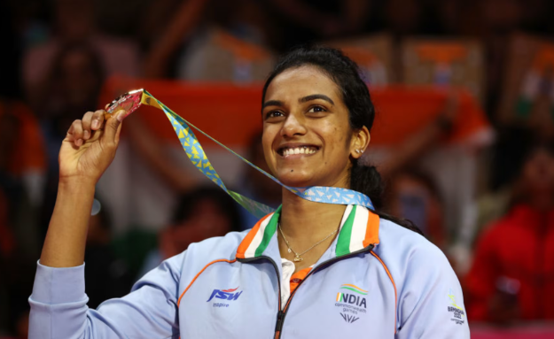

Career Milestones
First World Championship Medal
Won bronze at BWF World Championships in Guangzhou

At just 18 years old, Sindhu became the first Indian woman to win a medal at the BWF World Championships, securing bronze. She also received the Arjuna Award this year.
Read MoreCommonwealth Games Bronze
Won bronze at Commonwealth Games in Glasgow

Sindhu continued her success with another World Championship bronze and won her first Commonwealth Games medal, establishing herself as a rising star in world badminton.
Read MoreOlympic Silver Medal
Historic silver medal at Rio Olympics

Sindhu made history by becoming the first Indian woman to win an Olympic silver medal in badminton. She defeated several top players before losing to Carolina Marin in the final. Received Padma Shri and Rajiv Gandhi Khel Ratna Award.
Read MoreWorld Championship Silver
Reached World Championship final in Glasgow

Sindhu reached her first World Championship final, winning silver after a thrilling match against Nozomi Okuhara that lasted 110 minutes, one of the longest matches in badminton history.
Read MoreBWF World Tour Finals Winner
First Indian to win BWF World Tour Finals

Sindhu became the first Indian to win the prestigious BWF World Tour Finals, defeating Nozomi Okuhara in the final. She also won Commonwealth Games gold and Asian Games silver this year.
Read MoreWorld Champion
Won gold at BWF World Championships in Basel

Sindhu achieved her greatest triumph by winning the World Championship gold medal, defeating Nozomi Okuhara in straight sets. This made her the first Indian to win a World Championship gold in women's singles.
Read MorePadma Bhushan Award
Received India's third-highest civilian honor

Sindhu was honored with the Padma Bhushan, India's third-highest civilian award, recognizing her exceptional contributions to Indian sports and badminton.
Read MoreOlympic Bronze Medal
Second Olympic medal at Tokyo Olympics

Sindhu made history again by becoming the first Indian woman to win two Olympic medals, securing bronze in Tokyo. She defeated He Bingjiao in the bronze medal match.
Read MoreCommonwealth Games Gold
Won gold at Commonwealth Games in Birmingham

Sindhu won her first Commonwealth Games gold medal in women's singles, defeating Michelle Li in the final. She also won silver in the mixed team event.
Read More